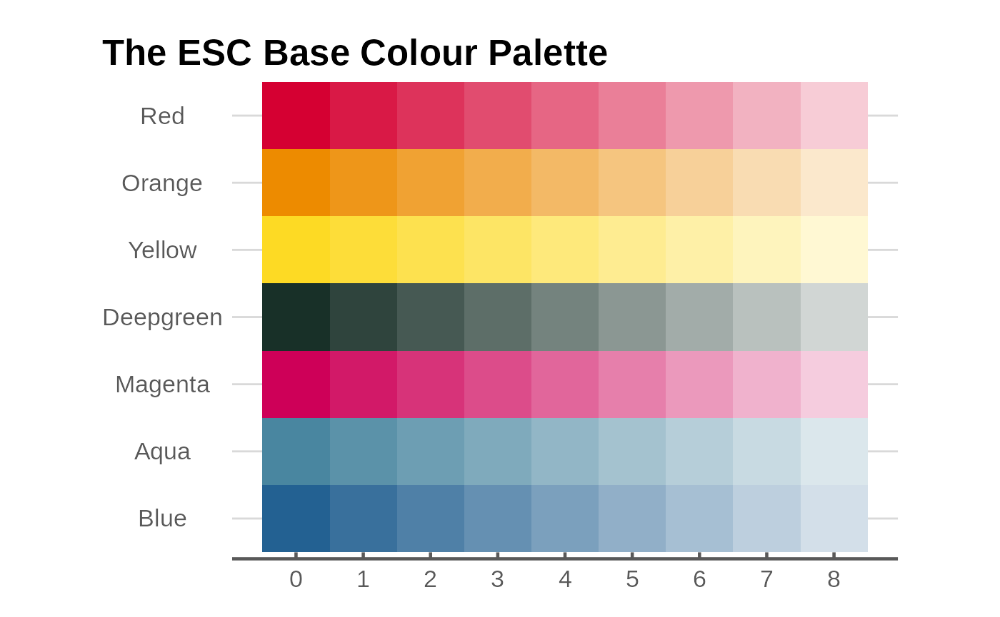
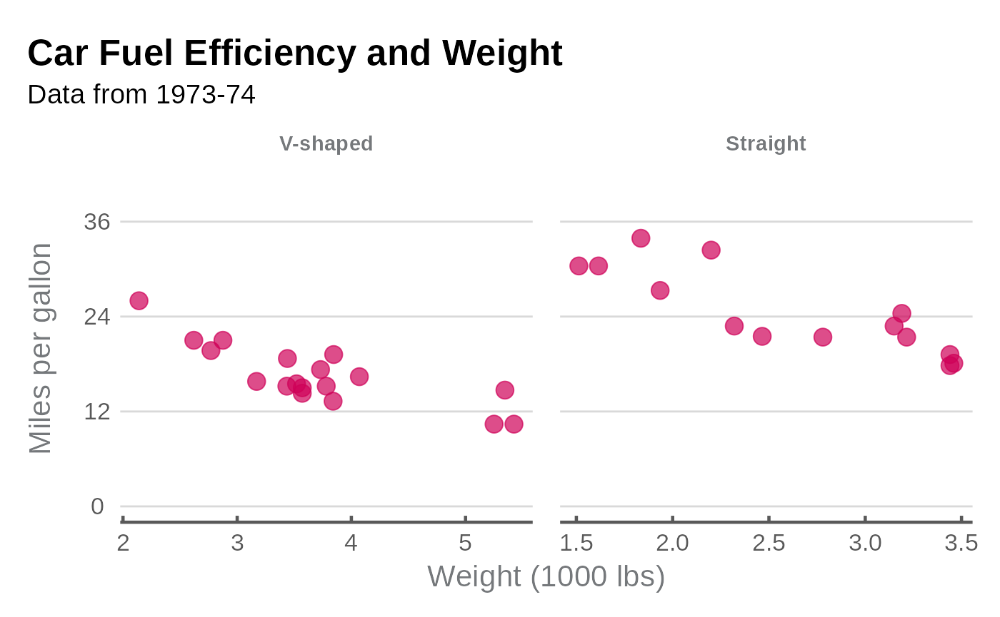

Introduction to esctheme
esctheme.RmdIntroduction
esctheme is the Essential Services Commission of
Victoria graphing package for producing graphs that abide by our charts
standards. It works by changing the appearance and functionality of
charts produced using the ggplot2 package.
You should read this article to help you understand how to create charts following our chart standards.
This article provides some examples to help you figure out what elements you can change. The function documentation provides comprehensive information on the full customisation of the package.
Correct workflow
When making graphs, you should follow the below workflow.
Save your graph using esc_save(). Do
not use the Export button in the Plots tab or
ggsave().
Start by creating a graph using the ‘normal’ stuff:
ggplot(data, aes(x, y)) + geom_blah(). Then:
- Add plot labelling:
plot_label() - Use
theme_e61()at the end of your plot code. - Save the graph:
esc_save().
The colour palette
This is the Essential Services Commission colour palette.
All the colours are package objects that can be selected by using the
appropriate name. For example, esc_magenta selects the
colour ‘Magenta’ with nine shades starting from the base shade in column
‘0’.

The esc_palette function provides you with
n base colours in coloumn ‘0’ plus three additional
secondary colours.
Graph examples
Line graph
g <- ggplot(data_3, aes(x = year, y = value, colour = category)) +
geom_line(linewidth = 1, show.legend = FALSE) +
scale_colour_manual(values = esc_palette(3)) +
plot_label(c("Food and\nTobacco", "Household\nOperation", "Medical and\nHealth"),
c(1944, 1954, 1953),
c(65, 55, 25),
colour = esc_palette(3)
) +
labs(
title = "US Personal Expenditures*",
subtitle = "1940-1960",
caption = "* Data comes from the built-in US Personal Expenditure dataset."
) +
ylab("US$ billions") +
esc_theme(rm_x_leg = TRUE)
Column graph
g <- ggplot(data_3, aes(x = year, y = value, fill = category)) +
geom_col(position = "dodge", show.legend = FALSE, colour = "black") +
scale_y_continuous(expand = expansion(mult = c(0,.2))) +
scale_fill_manual(values = esc_palette(3)) +
plot_label(c("Food and\nTobacco", "Household\nOperation", "Medical and\nHealth"),
c(1936, 1943, 1950),
c(85, 85, 85),
colour = esc_palette(3)) +
labs(
title = "US Personal Expenditures*",
subtitle = "1940-1960",
caption = "* Data comes from the built-in USPersonalExpenditure dataset."
) +
ylab("US$ billions") +
esc_theme(rm_x_leg = TRUE)
Scatter graph
# Set up data
mtcars2 <- within(mtcars, {
vs <- factor(vs, labels = c("V-shaped", "Straight"))
am <- factor(am, labels = c("Automatic", "Manual"))
cyl <- factor(cyl)
gear <- factor(gear)
})
# Graph
g <- ggplot(mtcars2, aes(x = wt, y = mpg, colour = gear)) +
geom_point(size = 4, show.legend = FALSE) +
scale_colour_manual(values = esc_palette(3)) +
plot_label(
label = c("3 cyl", "4 cyl", "5 cyl"),
x = c(4, 2.7, 2.5),
y = c(23, 35, 15),
colour = esc_palette(3),
size = 4.5
) +
labs(
title = "Car Fuel Efficiency and Weight",
subtitle = "Data from 1973-74"
) +
xlab("Weight (1000 lbs)") +
ylab("Miles per gallon") +
esc_theme()
Faceted scatter graph
g <- ggplot(mtcars2, aes(x = wt, y = mpg)) +
facet_wrap(~vs, scale = "free_x") +
geom_point(size = 4, colour = esc_magenta[1], alpha = .7) +
scale_y_continuous(limits = c(0, 40), breaks = seq(0,40, 12)) +
labs(
title = "Car Fuel Efficiency and Weight",
subtitle = "Data from 1973-74"
) +
xlab("Weight (1000 lbs)") +
ylab("Miles per gallon") +
esc_theme()
Density graph
g <- ggplot(mpg, aes(x = cty, fill = factor(cyl))) +
geom_density(linetype = "blank", alpha = 0.7, show.legend = FALSE) +
scale_fill_manual(values = esc_palette(4)) +
scale_y_continuous(expand = 0) +
labs(
title = "Distribution of Car City Mileage",
subtitle = "Miles per gallon, by number of cylinders"
) +
plot_label(label = c("3 cyl", "5 cyl", "6 cyl", "8 cyl"),
x = c(25, 24, 16, 12),
y = c(0.1, 0.35, 0.25, 0.25),
size = 4.5,
colour = esc_palette(4)) +
ylab("Density") +
esc_theme(rm_x_leg = TRUE)
Horizontal bar graph
There are a few reasons to work with horizontal bars, some are:
- Long category labels to improve readability.
- Multiple categories
- Data ordering
Horizontal bar graphs made with coord_flip() require
some changes to the theme() in order to look proper.
format_flip wraps those changes up in a convenient function
that should be appended at the end of the graph code, after theming
functions such as esc_theme() have been called.
g <- ggplot(data_col, aes(x = category, y = value, fill = factor(year))) +
geom_col(position = "dodge") +
coord_flip() +
scale_fill_manual(values = esc_palette(2)) +
plot_label(c("1940", "1960"),
c(1.8, 2.2),
c(15, 50),
size = 4.5,
colour = esc_palette(2)) +
labs(
title = "1940 to 1960 Change"
) +
ylab("US$ billions") +
esc_theme(rm_y_leg = TRUE) +
format_flip()